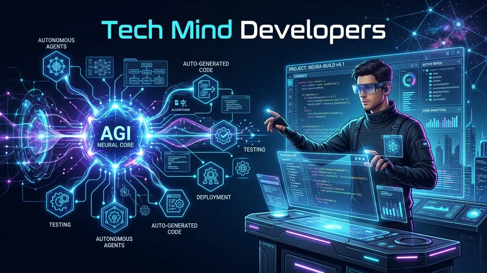

Future of AGI and Software Development: Timeline, Predictions and Career Impact for DevelopersAGI Aur Software Development Ka Future: Timeline, Industry Predictions Aur Developers Ka Career Impact
September 27, 2026 5 min read1 views Tech Mind Developers Engineering Team

Ever since artificial intelligence models began generating working code snippets and building small web pages from a single prompt, a wave of anxiety has swept across the software industry. Junior programmers and engineering students constantly ask whether learning software development is still worthwhile, while IT leaders wonder how team structures will evolve over the next decade.
At Tech Mind Developers, our engineering team works with modern agentic development tools every single day. The practical reality on the ground looks very different from sensational internet doom-posting. The software industry is not ending; it is going through the biggest productivity elevation since the invention of high-level programming languages. Here is an honest engineering analysis of what lies ahead.
The Realistic Future of AGI and Software Engineering: Direct Answer
Quick Answer: The evolution toward AGI will eliminate manual syntax typing and repetitive boilerplate coding, but it will not replace the need for software engineers. Instead, developers are evolving into high-level system architects who direct autonomous AI agents, design complex database schemas, enforce security guardrails, and solve intricate human business problems.
Writing raw lines of code has always been only a small fraction of real software engineering. The hardest part of building software is understanding messy business requirements, negotiating trade-offs between performance and cost, preventing data race conditions, and keeping systems secure from malicious attacks. An AI model can write a clean sorting algorithm in seconds, but it cannot independently decide how your warehouse inventory should sync with customer bank statements during a network timeout.
As coding assistants evolve into multi-agent systems, developers spend less time looking up syntax in manuals and more time designing scalable architectures. The profession is shifting from typing lines of code to orchestrating intelligent software workflows that deliver real-world business outcomes.
The Great Industry Debate: Timeline and Predictions from AI Leaders
Top scientists and technology executives hold sharply contrasting views on when true Artificial General Intelligence will become reality:
The Near-Term Camp: Leaders at major AI frontier labs predict that systems approaching human-level reasoning will emerge before 2030, driven by exponential compute scaling and synthetic data training.
The Grounded Skeptics: Pioneering researchers like Yann LeCun point out that transformer language models lack genuine common sense, physical intuition, and world comprehension. They argue that reaching AGI requires fundamentally new architectures that could take decades to discover.
The Practical Engineering View: For working software teams, the exact date of theoretical AGI matters far less than today's practical tools. Autonomous coding agents are already here, and mastering them today delivers an immediate competitive advantage.
How Autonomous AI Agents Are Transforming the Developer Workflow
Modern software development is no longer about writing every line by hand. The six most significant shifts taking place inside high-performing engineering teams include:
Agentic Code Reviews
Automated agents inspect pull requests in real time, detecting memory leaks, SQL injection flaws, and security oversights instantly.
Automated Test Suites
Instead of manually writing unit tests for days, developers direct AI agents to simulate thousands of edge-case user interactions.
Legacy Code Refactoring
Modern models parse decades-old legacy codebases, explaining undocumented business logic and modernizing frameworks safely.
Natural Language Schemas
Engineers describe application data flows in plain English, and agents scaffold production-grade relational tables and indexes.
Instant API Documentation
Complex microservice endpoints and external webhooks are documented automatically, saving weeks of manual technical writing.
Multi-Agent DevOps
Autonomous agents monitor production error logs, suggest immediate hotfixes, and draft rollback plans during server incidents.
Career Advice for Programmers
Stop focusing purely on syntax and specific language quirks. Invest your energy in database normalization, distributed systems, network security, and business domain logic. Those core architectural foundations will never be rendered obsolete.
The Shift from Pure Coding to System Architecture
Throughout computing history, every major advancement that made programming easier actually increased total demand for software engineers. When compilers replaced assembly language, people feared programmers would disappear. Instead, the software market expanded by a thousand times because software became faster and cheaper to build.
AI tools are creating the exact same economic expansion. Projects that once required a team of ten engineers and two years of runway can now be shipped by a lean team of three developers in three months. Because developing software is becoming faster and more cost-effective, millions of businesses that could never afford custom platforms are now entering the market as buyers.
The developers who face career danger are those who insist on doing routine, repetitive work manually. Those who embrace modern agentic workflows become 10x engineers, managing multiple parallel feature releases while maintaining rigorous quality control.
How Engineering Teams in India and Globally Are Adapting
Software hubs across India, from Noida and South Delhi to Bengaluru, are rapidly evolving to lead this agentic revolution. Engineering agencies that adapt their delivery models will dominate the next decade of digital transformation.
At Tech Mind Developers, our engineers work at the intersection of rock-solid architecture and modern agentic workflows. When we build custom software development platforms and cross-platform mobile app development, we direct AI agents to handle the boilerplate code so our senior developers can focus purely on business logic, database indexing, and bulletproof security. Whether you are launching an online portal with our team as a trusted website development company in Okhla, Delhi, or architecting multi-branch ERP databases with our custom software development in Aligarh, we make sure your software delivers tangible business ROI from day one.
The future belongs to builders who know how to connect intelligent machines to real human needs. By pairing human creativity with agentic development tools, engineering teams can solve bigger problems faster than ever before.
Frequently Asked Questions
No. Autonomous AI agents and LLMs will eliminate manual syntax memorization and repetitive boilerplate coding, but software engineering requires understanding human business goals, edge-case debugging, database integrity, and system architecture that AI cannot independently navigate.
High-demand skills will center on distributed system architecture, database optimization, cybersecurity verification, API orchestration, and agentic prompt engineering rather than routine code typing.
Developers should transition from manual coders to technical directors. Learn to orchestrate multiple AI agents, write comprehensive automated test suites, audit AI-generated code for security flaws, and focus on understanding user business problems.
Tech Mind Developers Engineering Team
Software Architects and AI Engineering Specialists
We build production-ready cloud software, scalable mobile applications, and intelligent AI workflows for businesses in India and across the world.
Build High-Performance Software With Expert Engineers
Harness modern AI tools and rock-solid architecture for your business platform. Let our senior engineering team build your custom software system.
Jab se artificial intelligence models ne working code snippets aur simple prompt se poore web pages banana shuru kiya hai, tab se software industry mein ek ajeeb sa darr phail gaya hai. Junior programmers aur engineering students lagatar yeh poochte hain ki kya ab coding seekhna bekaar hai, jabki IT managers yeh samajhne ki koshish kar rahe hain ki agle 10 saal mein software teams ka structure kaisa hoga.
Tech Mind Developers mein hamari engineering team rozana modern agentic coding tools ke sath real-world software build karti hai. Ground reality internet ke sensational darr se bilkul alag hai. Software industry khatam nahi ho rahi, balki high-level languages ke aane ke baad se ab tak ke sabse bade productivity leap se guzar rahi hai. Aaiye dekhte hain ki real engineering future kaisa dikhta hai.
AGI Aur Software Engineering Ka Real Future: Direct Answer
Quick Answer: AGI ki taraf badhne se manual syntax typing aur repetitive boilerplate coding khatam ho jayegi, lekin software engineers ki demand bani rahegi. Developers ab typing karne wale coder se badalkar high-level system architects ban rahe hain jo AI agents ko direct karte hain, database schemas design karte hain aur real business problems solve karte hain.
Asal mein lines of code type karna real software development ka sirf ek chhota hissa hota hai. Asli mushkil kaam hota hai client ki business requirement ko samajhna, cost aur speed mein balance banana, data security maintain karna aur server crash hone par payment failure ko handle karna. AI model clean sorting code seconds mein likh dega, lekin woh business trade-offs aur user empathy khud decide nahi kar sakta.
Jaise jaise coding tools multi-agent workflows mein badal rahe hain, engineers manuals mein syntax dhoondhne ke bajaye scalable systems design karne mein time spend karte hain. Profession ab keyboard par typing karne se aage nikal kar intelligent software pipelines manage karne ka ban raha hai.
Tech Industry Ki Badi Behas: AI Leaders Ki Timelines Aur Predictions
Duniya ke top scientists aur tech founders ke paas AGI ke aane ki timeline par alag-alag viewpoints hain:
Jaldi Aane Wala Group: Badi AI labs ke leaders ka kehna hai ki compute power aur synthetic training data ke dam par 2030 se pehle human-level reasoning models aa jayenge.
Grounded Scientists: Yann LeCun jaise top researchers ka kehna hai ki transformer models ke paas common sense aur physical world ki samajh nahi hoti. Unke mutabiq asli AGI ke liye naye fundamental research mein dashkon lag sakte hain.
Practical Engineering View: Real software teams ke liye theoretical AGI kab aayegi isse zyada zaroori aaj ke tools hain. Autonomous coding agents aaj live hain aur inhein master karke aap market mein sabse aage nikal sakte hain.
Autonomous AI Agents Developers Ka Workflow Kaise Badal Rahe Hain
Modern software development ab har cheez manually likhne ka naam nahi raha. Top software teams mein aane wale 6 sabse bade technical badlav yeh hain:
Agentic Code Reviews
Automated agents code commits ko real time mein inspect karke memory leaks aur SQL injection flaws seconds mein pakadte hain.
Automated Test Suites
Manual testing mein ghante lagane ke bajaye AI agents hazaron edge cases aur user flows turant simulate karke tests likhte hain.
Legacy Code Refactoring
Purane 10-saal purane systems ka undocumented code AI models asani se samajhte hain aur modern clean frameworks mein convert karte hain.
Natural Language Schemas
Developers data flow normal English mein likhte hain aur agents database tables, relations aur indexes automatically structure karte hain.
Instant API Documentation
Complex microservices aur external webhooks ka complete documentation automatically generate hota hai, jisse team ka time bachta hai.
Multi-Agent DevOps
Production server errors par autonomous agents live logs monitor karte hain, hotfixes recommend karte hain aur rollback plans banate hain.
Career Advice for Programmers
Sirf kisi language ke syntax ya framework par depend rehna band kijiye. Database design, distributed systems, cybersecurity aur business problem solving seekhiye. Yeh core architectural skills kabhi obsolete nahi honge.
Sirf Coding Se System Architecture Ki Taraf Bada Badlav
Computing history gawaah hai ki jab bhi programming asaan hui hai, software engineers ki demand hamesha badhi hai. Jab compilers aaye the toh logon ne kaha tha programmers khatam ho jayenge. Lekin hua ulta, software market hazaar guna bada ho gaya kyunki software banana sasta aur tez ho gaya.
AI tools bilkul waisa hi economic expansion la rahe hain. Jo project pehle 10 engineers aur 2 saal lagata tha, woh ab 3 smart developers 3 mahine mein deliver kar dete hain. Software development affordable hone ki wajah se har chhota-bada business custom apps banwane market mein aa raha hai.
Khatra un coders ke liye hai jo repetitive boilerplate kaam manually karte rehte hain. Jo log agentic workflows seekh lete hain woh 10x engineer ban jaate hain aur high quality control ke sath parallel feature releases manage karte hain.
India Aur Global Market Mein Engineering Teams Khud Ko Kaise Dhaal Rahi Hain
Noida, South Delhi aur pure India ke tech hubs is agentic revolution ko lead karne ke liye tezi se upgrade ho rahe hain. Jo development agencies apne workflows adapt karengi wahi agle decade par raaj karengi.
Tech Mind Developers mein hamari team solid system architecture aur modern agentic tools ko sath lekar kaam karti hai. Jab hum kisi client ke liye custom software development ya cross-platform mobile app development build karte hain, toh repetitive boilerplate code AI agents se tezi se likhwaya jaata hai, jabki hamare senior engineers apna poora focus business logic, database security aur edge cases par lagate hain. Chahe aap apni digital presence ke liye hamari website development company in Okhla, Delhi team se consult karein, ya manufacturing operations ke liye hamare custom software development in Aligarh systems review karein, hamara maksad hamesha aapke business ko tez aur future-proof banana hota hai.
Future un builders ka hai jo intelligent machines ko real human needs se jodna jante hain. Human creativity aur AI agentic tools milkar aisi problems solve kar sakte hain jo pehle namumkin lagti thi.
Frequently Asked Questions
Nahi. AI repetitive syntax aur boilerplate code khatam kar degi, lekin software engineering business understanding, edge-case testing, database design aur security ka naam hai jo AI akele bina human direction ke nahi kar sakti.
Distributed architecture, database optimization, cybersecurity, multi-agent orchestration aur business domain problem solving sabse high-paying skills rahenge, na ki basic code typing.
Manual coder se technical director banne ki taraf transition karein. AI agents chalana seekhein, automated test cases likhein, AI generated code ki security audit karein aur client ke business goals samajhne par focus karein.
Tech Mind Developers Engineering Team
Software Architects and AI Engineering Specialists
Hum pure India aur international clients ke liye scalable cloud software, mobile applications aur intelligent AI workflows design aur develop karte hain.
Expert Engineers Ke Sath High-Performance Software Banayein
Modern AI tools aur solid architecture ke sath apne business ke liye custom software platform launch karein. Hamari senior engineering team se judiye.